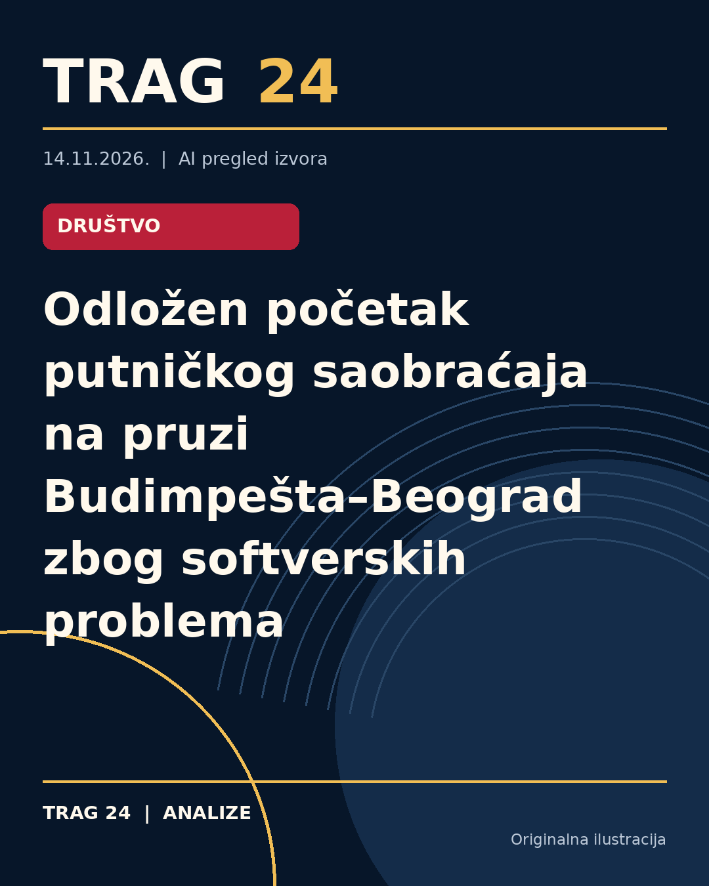

Odložen početak putničkog saobraćaja na pruzi Budimpešta–Beograd zbog softverskih problema

ŠTA SE DOGODILO
Početak putničkog saobraćaja na brzoj pruzi Budimpešta–Beograd odložen je zbog uočenih softverskih grešaka u sistemu za upravljanje vozovima. Datum uspostavljanja putničkog prevoza još nije poznat, jer se radovi na otklanjanju problema nastavljaju, a novi testovi i dobijanje neophodnih dozvola su u toku.
HRONOLOGIJA
U prethodnih nekoliko nedelja sprovedena su intenzivna testiranja pruge, kakva do sada nisu zabeležena u istoriji mađarskih železnica. Tokom tih provera otkriveni su manji softverski problemi koje kineski izvođač radova trenutno otklanja. Novi železnički red vožnje, koji stupa na snagu 13. decembra, neće obuhvatiti ovu prugu, uprkos ranijim najavama srpskih i austrijskih železnica o uvođenju putničkog saobraćaja.
ŠTA NAVODE IZVORI
Mađarski ministar saobraćaja i investicija David Vitezi je naglasio u objavi na Fejsbuku, prenetoj preko RTS-a, da je reč o prvoj pruzi u Mađarskoj na kojoj se primenjuju kineski bezbednosni sistemi usklađeni sa evropskim standardima. On je takođe istakao da je u proces testiranja uključena i nezavisna organizacija za osiguranje kvaliteta TÜV, što je inicirao bivši ministar Janoš Lazar. Vitezi je uputio da putnički saobraćaj neće početi sve dok ne bude potvrđeno funkcionisanje bezbednosnih sistema bez grešaka koje mogu ugroziti putnike. Dodao je da će testiranja biti ponovljena nakon svake korekcije softvera, a dozvole će biti izdate tek kada sva testiranja budu uspešno završena bez zamerki.
ŠTA JE POTVRĐENO
Potvrđeno je da su tokom testiranja na pruzi detektovani manji softverski problemi u sistemu za upravljanje vozovima. Takođe, potvrđeno je da putnički vozovi neće saobraćati na ovoj pruzi do daljeg, a novi železnički red vožnje od 13. decembra neće uključivati ovu prugu. Potvrđeno je i to da je uključena nezavisna organizacija TÜV u proces osiguranja kvaliteta i sertifikacije, kao i da se kineski izvođač radova aktivno radi na otklanjanju problema.
ŠTA NIJE POTVRĐENO
Nije poznat tačan datum kada će putnički saobraćaj biti uspostavljen na pruzi Budimpešta–Beograd. Takođe, nisu dostupni detalji o prirodi i obimu softverskih grešaka, niti kompletan plan aktivnosti za završavanje testiranja i dobijanje dozvola.
ŠTA OSTАJE OTVORENO: Ostaje otvoreno pitanje kada će biti završeni svi neophodni radovi i testiranja na pruzi kako bi putnički saobraćaj mogao da počne. Ostaje nepoznato koliko će trajati otklanjanje softverskih problema i kada će biti dostupne službene potvrde nadležnih organa, organizacije za kvalitet i sertifikacionih tela o bezbednom početku rada pruge za putnike.
Izvori
- https://nova.rs/vesti/biznis/odlozen-pocetak-putnickog-saobracaja-na-pruzi-budimpestabeograd-otkrivene-softverske-greske/
- https://n1info.rs/vesti/odlozen-pocetak-putnickog-saobracaja-na-pruzi-budimpestabeograd-otkrivene-softverske-greske/
- https://insajder.net/prenosimo/vitezi-odlozen-pocetak-putnickog-saobracaja-na-pruzi-budimpesta-beograd-otkrivene-softverske-greske
Ova analiza je pripremljena uz pomoć veštačke inteligencije na osnovu javno dostupnih izvora. Navodi izvora nisu nužno nezavisno potvrđeni.